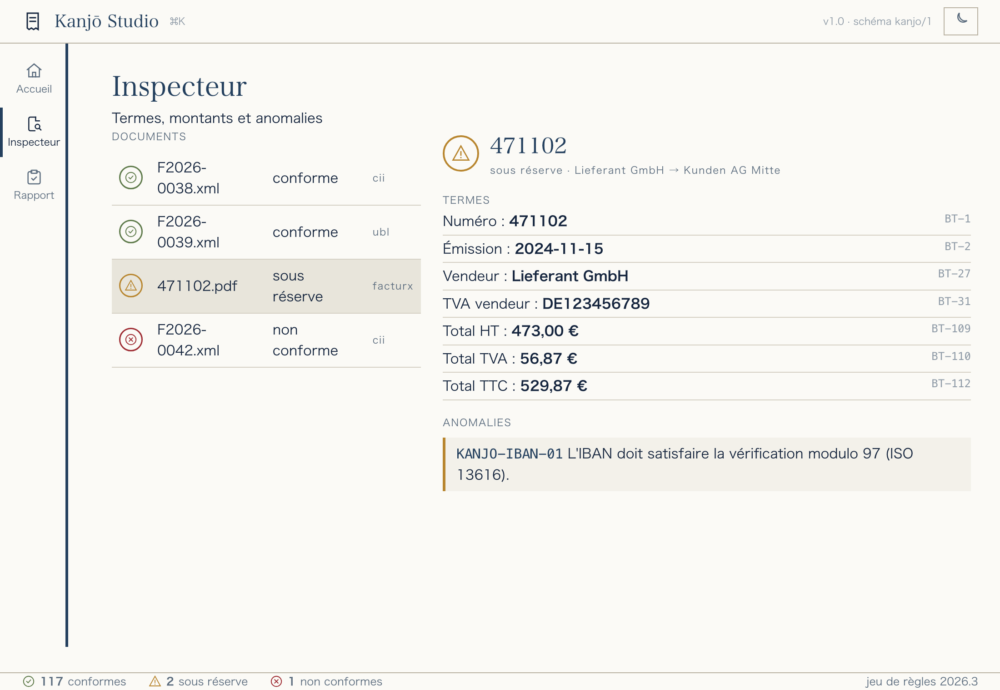
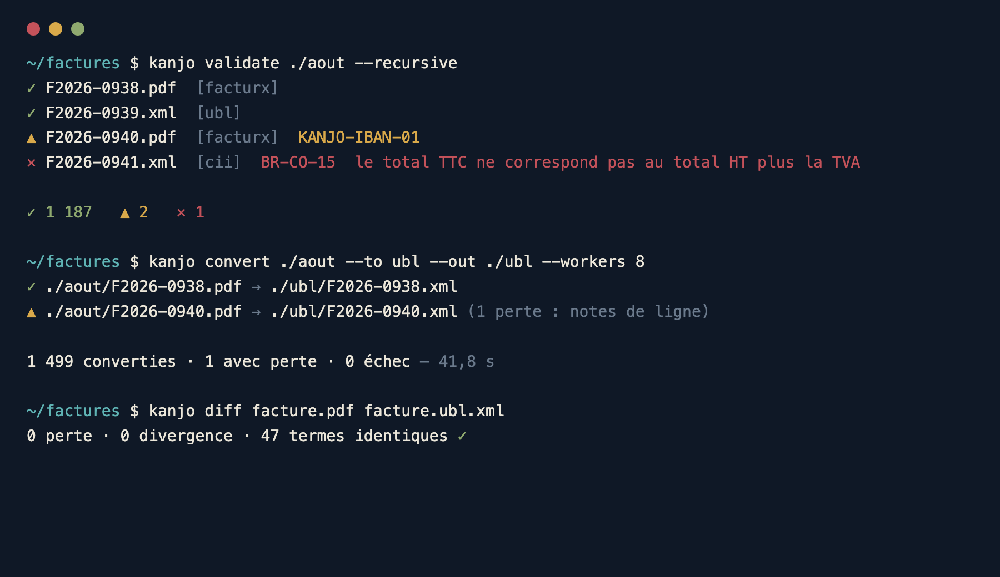
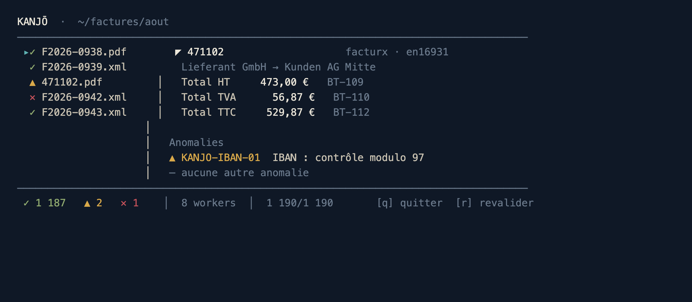
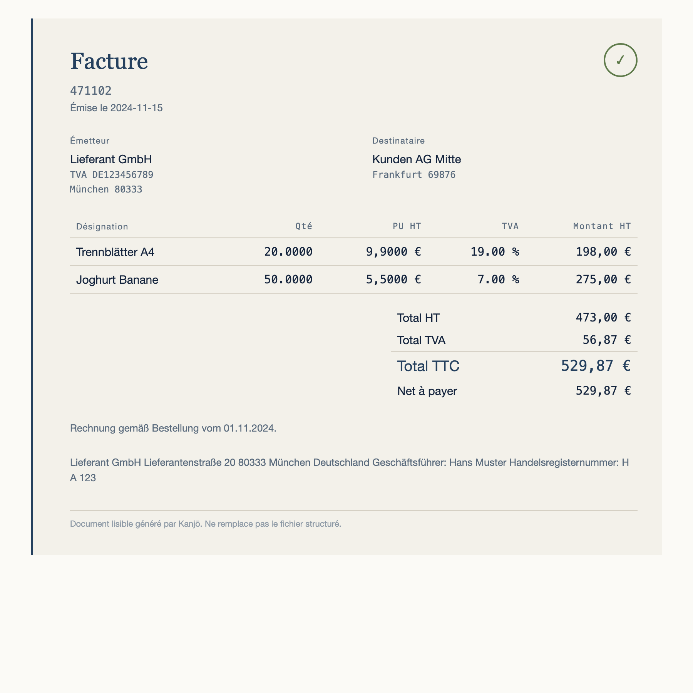

Kanjō lit, valide, convertit, répare, compare et rend lisibles les factures Factur-X, UBL 2.1 et CII — du poste du comptable jusqu'aux plateformes SaaS. Une seule implémentation, trois interfaces : ligne de commande, terminal et application de bureau.
Tout passe par un modèle pivot aligné sur la sémantique EN 16931 : ajouter un format, c'est un lecteur et un écrivain — pas une explosion de convertisseurs. Le cœur ne dépend que de la bibliothèque standard, et rien ne sort du poste sans action explicite.
Factur-X (PDF/A-3), UBL Invoice/CreditNote, CII D16B, JSON pivot. Détection par le contenu, jamais par l'extension.
Moteur EN 16931 natif (BR / BR-CO / BR-CL / BR-DEC / BR-S/Z/E/AE/K/G/O), CIUS française et règles maison. Calculé, jamais simulé.
CII ⇄ UBL, Factur-X, XRechnung (UBL/CII), Peppol BIS 3.0, JSON, CSV — avec rapport de perte explicite.
Découverte récursive, pool de workers, reprise sur incident, quarantaine, surveillance de dossier.
Diff sémantique entre deux factures, quels que soient leurs formats : distingue pertes et divergences.
Facture HTML autonome et rapport de conformité imprimable, dans le design de l'application.
Remplacement déterministe des données personnelles pour constituer un corpus de test sans rien exporter.
Index SQLite local des documents traités, droit à l'effacement, journal d'audit horodaté sans donnée personnelle.
La même logique métier alimente la ligne de commande, l'interface texte et l'application de bureau. Vous automatisez en CLI, vous inspectez en TUI, vos comptables travaillent dans Studio.

Client lourd natif (ou serveur local ouvert dans le navigateur). Glissez vos factures,
voyez le verdict s'apposer, explorez chaque terme BT et chaque anomalie. Thème clair/sombre,
palette de commandes ⌘K, 100 % hors-ligne.

Pour les intégrateurs et l'automatisation. convert, validate,
extract, embed, diff, watch,
generate, anonymize… Toute commande a une sortie
--format json stable et des codes de sortie normalisés.

Inspection interactive directement dans le terminal, sans quitter le clavier. Liste à statuts, détail des termes et anomalies, revalidation à la volée — idéale en SSH ou sur un serveur.
Chaque facture structurée peut être rendue en un document HTML autonome, sobre et imprimable.

Déposez un lot de 500 factures reçues dans Studio : chaque document est validé et rendu lisible. Les 4 vrais problèmes ressortent, groupés par règle, prêts à corriger.
Surveillez un dossier EDI : chaque fichier déposé est converti (CII → UBL), validé et rangé. Reprise sur incident, quarantaine des échecs, sortie JSON pour le SI.
La bibliothèque pkg/ valide et convertit à l'échelle, mémoire constante, sans dépendance runtime — éprouvée sur un corpus de 7 365 factures réelles open-source (CEN, Peppol, XRechnung, ZUGFeRD).
Comparez une Factur-X à sa conversion UBL pour prouver l'absence de perte. Anonymisez un cas client réel avant de le transmettre — conforme RGPD.
Le socle réglementaire français (Factur-X / UBL 2.1 / CII) est au cœur. La validation est réellement calculée — jamais un verdict de complaisance.
Corpus réel open-source : 7 365 factures (CEN, Peppol, XRechnung, phive-rules multi-juridictions, ZUGFeRD) lues sans jamais faire paniquer un lecteur. Corpus synthétique de contrôle vérifié en continu (38/38 succès, 12/12 erreurs). Exemples CEN complets lus 32/32 ; validation CEN CII 15/15, UBL 16/17 (l'écart, catégorie « B » hors norme, correctement rejeté). XML durci contre XXE et les bombes de décompression ; aucune donnée personnelle dans les journaux.
Lire le rapport de qualité & de conformité →
| Format | Lecture | Écriture | Validation |
|---|---|---|---|
| Factur-X (PDF/A-3, tous profils) | ✓ | ✓ embed | ✓ |
| CII D16B | ✓ | ✓ | ✓ |
| UBL 2.1 (Invoice + CreditNote) | ✓ | ✓ | ✓ |
| XRechnung (UBL & CII) | ✓ via UBL/CII | ✓ | ✓ |
| Peppol BIS Billing 3.0 | ✓ via UBL | ✓ | ✓ |
| JSON pivot · CSV | ✓ / — | ✓ / ✓ | ✓ |
| ZUGFeRD 1.0 (hérité, CII D14B) | ✓ | roadmap | ✓ |
| FatturaPA (FatturaElettronica v1.2) | ✓ lecture | roadmap | ✓ |
| Order-X · EDIFACT | roadmap | roadmap | roadmap |
La conformité EN 16931 n'est pas déclarée : elle est mesurée. Nous extrayons la liste canonique des règles depuis le Schematron officiel du CEN (223 règles) et un test automatique compare, à chaque commit, ce que Kanjō valide réellement. Un « cliquet » interdit toute régression. Voici la couverture, famille par famille.
Numéro, dates, parties, lignes, ventilations de TVA, bénéficiaire, représentant fiscal, pièces jointes, instructions de paiement — chaque terme obligatoire est contrôlé.
Sommes de lignes, totaux HT / TVA / TTC, net à payer, base × taux par catégorie et par taux — en arithmétique entière, jamais en float64.
Taux normal, zéro, exonéré, autoliquidation, intracommunautaire, export, hors champ (exclusif), IGIC/IPSI espagnols : taux, exonération et identifiants requis.
Devise ISO 4217, pays ISO 3166-1, moyens de paiement UNCL 4461, catégories UNCL 5305, motifs UNCL 5189 / 7161, schémas CEF EAS.
La liste de référence vient du Schematron CEN. Le test parity_test.go calcule la couverture réelle et échoue si elle régresse. Le chiffre « 95 % » est donc vérifiable, pas marketing.
Toutes les familles de TVA usuelles (taux normal, zéro, exonéré, autoliquidation, export) sont couvertes à 100 %, calculs de base et cohérence des montants inclus.
Chaque règle est réellement exécutée ; aucun sceau « conforme » n'est apposé sans calcul, aucune conformité PDF/A sans validation veraPDF effective (§17.7).
7 365 factures réelles open-source (CEN, Peppol, XRechnung, ZUGFeRD) lues sans jamais faire planter un lecteur ; exemples CEN validés conformes.
Listes de codes étendues, quelques BR-CO/DEC, et les familles régionales espagnoles (IGIC/IPSI) et italienne (split-payment) — suivies dans CONFORMITE-EN16931.md.
Outil, jeu de règles et schéma de sortie sont versionnés séparément : un changement de règle qui modifie un verdict est tracé et daté.
Un seul binaire, aucune dépendance runtime.
# Compilation (pur Go, cross-compilable sur 6 cibles) CGO_ENABLED=0 go build -o kanjo ./cmd/kanjo # Valider un dossier kanjo validate ./factures --recursive # Convertir Factur-X → UBL, en lot, 8 workers kanjo convert ./factures --to ubl --out ./ubl --workers 8 # Lancer l'application de bureau kanjo studio # serveur local + navigateur # ou l'interface texte kanjo tui ./factures